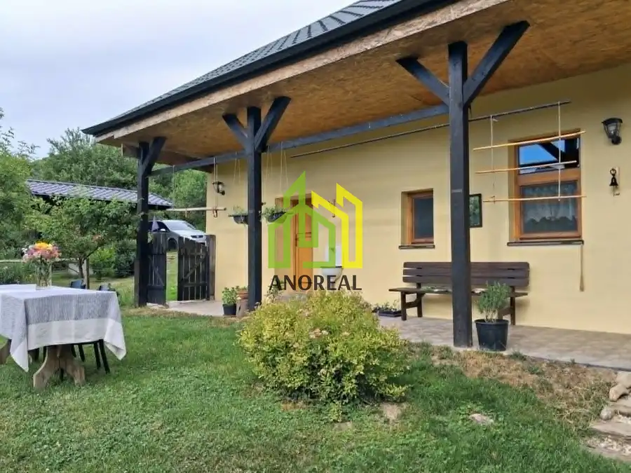
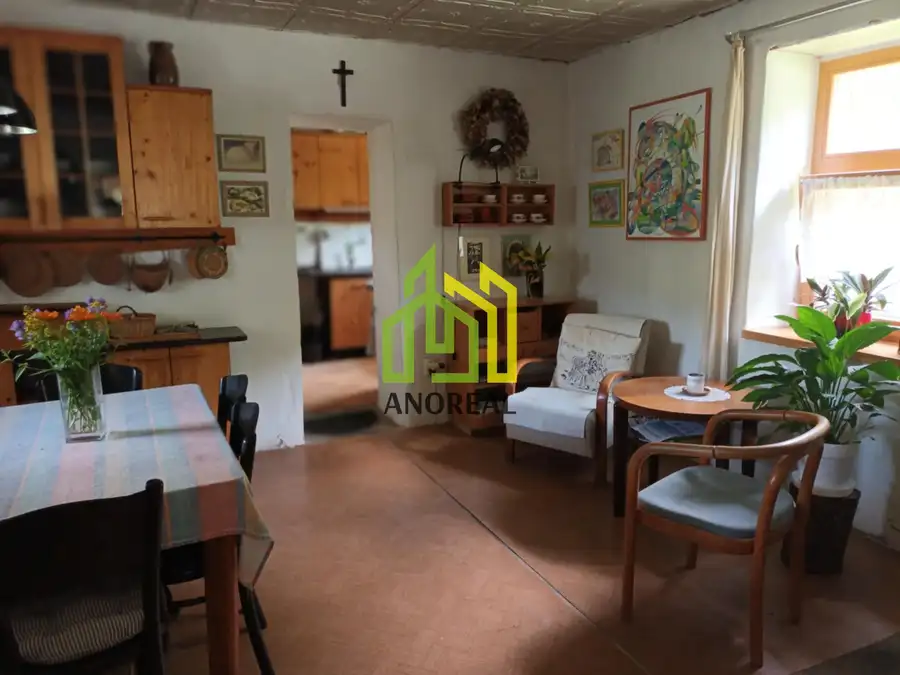
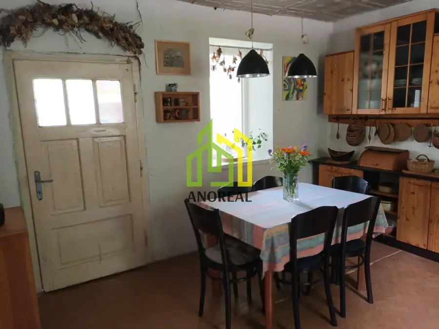
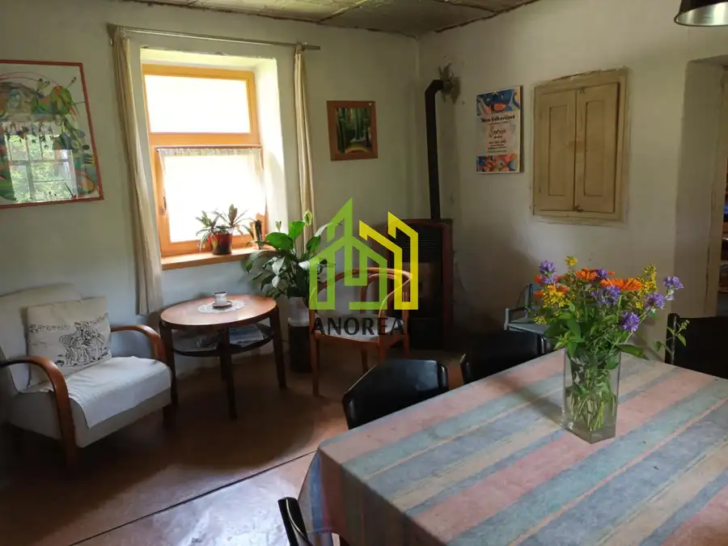
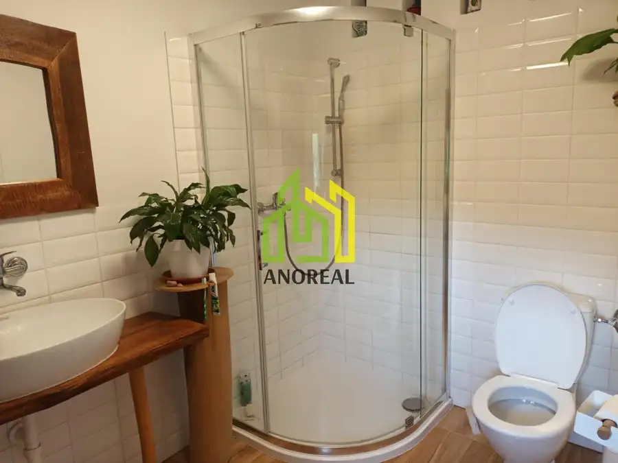

Rodinný dom na polosamote s veľkým pozemkom, Nová Bošáca
Nová Bošáca





- Plocha95 m²
- StavKompletná rekonštrukcia
O nehnuteľnosti
Kto hľadá pokoj, samotu, krásnu prírodu blízko lesa, výhľad na okolité kopce, oddych a vypnutie od starostí, je tu na predaj rodinný dom s krásnym výhľadom do okolia, blízko lesa, s veľkým pozemkom, vhodný k trvalému bývaniu ale i k víkendovému aktívnemu oddychu. Celková výmera pozemku je 4100 m2, okrasná záhrada, úžitková záhrada, veľký ovocný sad s rodiacimi stromami ( jablone, slivky, hruška, orechy, čerešne, višne, gaštany, marhuľa, broskyňa, lipa, figa a veľa ovocných kríkov). Na nehnuteľnosti prebehla rekonštrukcia strechy, elektrických, vodovodných rozvodov a odpadov, nová fasáda, nové drevené okná a vstupné dvere, nová komplet kúpeľňa navrhnutá interiérovou architektkou. Na nehnuteľnosti sčasti odizolované základy. Nehnuteľnosť postavená vo viacerých etapách, prvá vystavaná z nabíjanice ( surová hlina), ďalšie etapy vystavené z pálenej tehly a kvádrov.V dome dve spálne, obývacia miestnosť spojená s jedálňou, kuchyňa so vstupom z dvora, kúpeľňa spojená s WC, komora a súčasťou domu je aj skladová/ technická miestnosť.Pri dome je aj letná kuchynka, ktorá je podpivničená, nový prístrešok pre auto.Inžinierske siete: elektrina 220/ 380 V, studňa, internet. Vykurovanie na tuhé palivo, ohrev teplej vody elektrickým bojlerom. Voľný k nasťahovaniu po dohode. Kontakt: 0905 147 011, ivana.prazenicova@anoreal.sk
Parametre
- Druh
- Rodinný dom
- Druh domu
- Klasický dom
- Dátum zverejnenia
- 03. 07. 2026
- Energetický certifikát budovy
- nie je
- Plocha pozemku
- 4100 m²
- Počet kúpeľní
- 1
- Počet nadzemných podlaží
- 1
- Počet spální
- 2
- Príprava teplej vody
- El. akumulačný boiler
- Stav nehnuteľnosti
- Kompletná rekonštrukcia
- Telekomunikácie
- Internet
- Terén pozemku
- Mierne svahovitý
- Typ
- Predaj
- Typ konštrukcie
- Hlinená, Tehlová
- Vybavenie
- Garáž, Pivnica, Sklad, Technická miestnosť, Záhrada
- Vykurovanie
- Lokálne, Krb
- Zastavaná plocha
- 95 m²
- Zdroj tepla
- Uhlie alebo drevo
- Úžitková plocha
- 95 m²
Kde to je


Mohlo by Vás zaujímať
 Komerčné priestoryNové
339 900 €EXKLUZÍVNE: Rodinný dom vhodný na podnikanie – Žilina, Závodie
Žilina
190 m²
Komerčné priestoryNové
339 900 €EXKLUZÍVNE: Rodinný dom vhodný na podnikanie – Žilina, Závodie
Žilina
190 m²
 DomNové
339 900 €EXKLUZÍVNE: Rodinný dom v top lokalite Žilina – Závodie
Žilina
190 m²
DomNové
339 900 €EXKLUZÍVNE: Rodinný dom v top lokalite Žilina – Závodie
Žilina
190 m²
 PozemokNové
141 100 €Na predaj stavebný pozemok s prístreškom a skleníkom, Svederník -Lipová alej, 475 m2
Svederník
475 m²
PozemokNové
141 100 €Na predaj stavebný pozemok s prístreškom a skleníkom, Svederník -Lipová alej, 475 m2
Svederník
475 m²